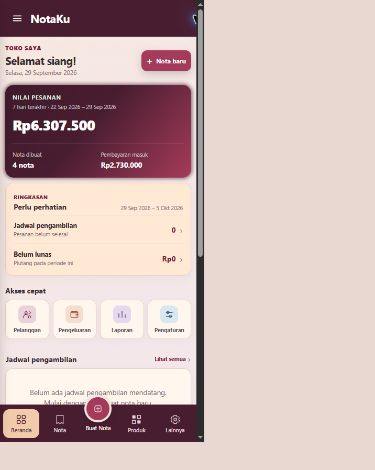
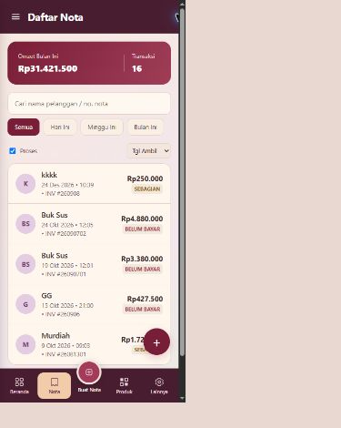
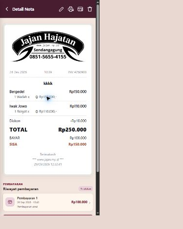
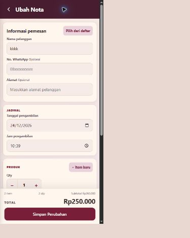
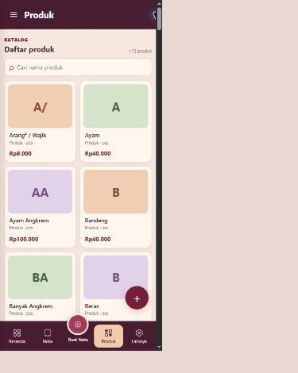
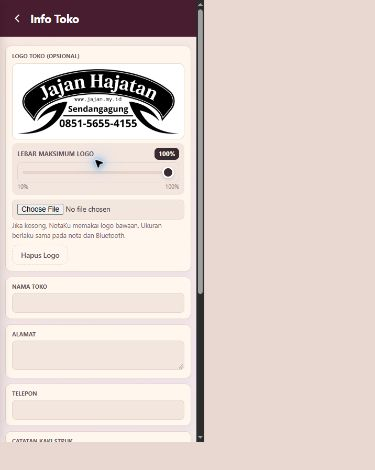
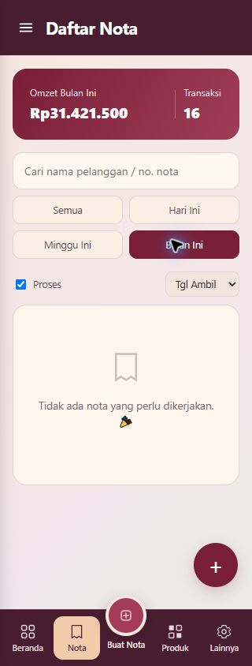

Metadata versi sudah satu pintu
version.json menjadi sumber utama. Perintah npm run version:sync menyelaraskan metadata npm, Android, version.js, service worker, dan README. Sinkronisasi berjalan otomatis sebelum penyiapan aset/build.
Audit fungsi dan visual aplikasi web/PWA dengan fokus mobile. Pengujian dilakukan pada data yang sedang ada tanpa menyimpan, menghapus, atau mengubah transaksi pengguna.
version.json sebagai satu sumber utama dengan sinkronisasi otomatis sebelum build.version.json menjadi sumber utama. Perintah npm run version:sync menyelaraskan metadata npm, Android, version.js, service worker, dan README. Sinkronisasi berjalan otomatis sebelum penyiapan aset/build.
Pada lebar ≤340 px, empat filter sekarang ditata menjadi grid 2×2. Semua pilihan berada di dalam viewport dan “Bulan Ini” mendapatkan status aktif saat dipilih.
| Area | Yang diverifikasi | Hasil |
|---|---|---|
| Dashboard | Ringkasan 7 hari, nilai nota, pembayaran masuk, quick access, jadwal, grafik | Lulus |
| Nota | Daftar, filter status/tanggal, detail, receipt, histori pembayaran, form tambah/ubah | Lulus; catatan 320 px |
| Produk | 115 kartu produk, harga, grid responsif, pencarian “Bergedel” menghasilkan satu item | Lulus |
| Pelanggan | Daftar 193 pelanggan, pencarian/struktur kartu, responsif | Lulus |
| Pengeluaran | Total Rp1.700.000 konsisten dengan 2 catatan yang tampil | Lulus |
| Laporan | Hari Ini, 7 Hari, Bulan Ini; omzet, pengeluaran, piutang, chart, status pembayaran | Lulus |
| Pengaturan | Menu utama, Info Toko, urutan logo-preview-slider, versi UI | Lulus; metadata versi tidak sinkron |
| Responsif | Audit overflow di 320, 390, 768 px; route utama, nota baru/detail/edit | Tidak ada overflow halaman; chart memang scroll horizontal |
| Native bridge | Bluetooth Android, MTU/ESC-POS, Sharesheet, Filesystem, updater APK | 4/4 automated test lulus |
| Konsol & sintaks | Error/warning browser dan parsing 43 file JS | Bersih |







Audit ini tidak melakukan aksi destruktif atau transaksi baru pada data aktif. Karena itu, simpan/hapus nota, produk, pelanggan, pembayaran, dan pengeluaran tidak dieksekusi. Perangkat printer Bluetooth fisik, WhatsApp eksternal, Google Drive, installer APK, dan perilaku Android nyata juga memerlukan pengujian perangkat/akun tersendiri. Hasil native di atas berasal dari automated test bridge, bukan koneksi printer fisik.